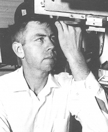

Please note: the AAS Obituaries are temporarily being hosted on this website while their full content is being ingested into the PubPub publishing platform newly adopted by the Bulletin of the American Astronomical Society. When the migration is complete, your existing links will take you to the final, migrated content. Contact peter.williams@aas.org with any questions.
Frank Quimby Orrall (1925-2000)
At the age of 74, Professor Orrall died in Ipswich, Massachusetts on 4 February 2000. He is renowned worldwide for the scope of his research on the solar corona and for his dedication to teaching.
Orrall was born on 15 October 1925 in Somerville, Massachusetts and received his BS in physics from the University of Massachusetts in 1950. At Harvard, under the supervision of Professors Donald Menzel and Richard Thomas, he earned his PhD in 1956.
A full obituary of Orrall's work at Sacramento Peak Observatory and the University of Hawaii was written by John T. Jefferies and Jack B. Zirker and published in Solar Physics , Vol. 194, No.2, pp. 185-187, June 2000.
Obituary written by: Barbara L. Welther (Smithsonian Astrophysical Observatory)
BAAS Citation: BAAS, 2001, 33, 1579
SAO/NASA ADS Bibcode: 2001BAAS...33.1579W